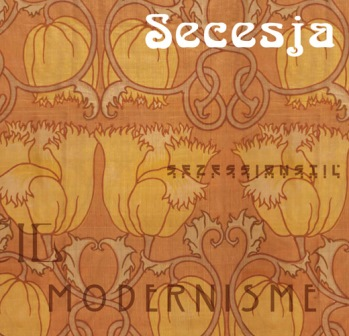
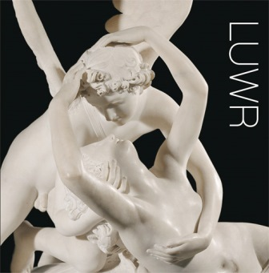
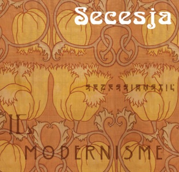
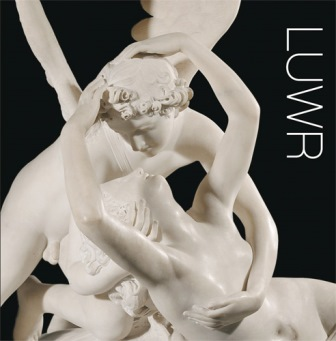

Moje opracowanie tekstu
Zaskakująco proste odkrycie, że twórczemu myśleniu, które jest z natury wielokurunkowe i z początku jeszcze niepoukładane (jak w przypadku planowania biznesu czy wyprawy turystycznej albo życia, pisaniu doktoratu, przygotowywaniu się do egzaminu itd.), lepiej służy... zaczynanie od środka kartki i wybieganie skojarzeniami w różne strony oraz stosowanie rysunków i symboli, a nie tylko słów. Natomiast szkolny nawyk linearnego zapisywania treści linijka pod linijką tłumi tę asocjacyjną swobodę myśli, będącą podstawą pomysłowości.
Niedowiarkom, którzy wietrzą w tym odkrywanie Ameryki, autor pokazuje notatki Beethovena, Darwina, Leonarda. Nie korzystali oni z jego systemu, ale też niezwykle fantyzyjnie traktowali praktykę notowania, które było swoistym „myśleniem w procesie”. Analiza właśnie tego typu przykładów podpowiedziała Buzanowi zasady mindmappingu.
Ale oczywiście nikt nie ma obowiązku stawać się kolejnym Beethovenem czy Darwinem. Wolno nie korzystać z tych spostrzeżeń...
Biblioteka NarodowaMój przekład
Skrótowy przegląd metod mnemotechnicznych do stosowania w życiu codziennym i szkolnym.
Biblioteka NarodowaMój przekład
Zwięzłe wyjaśnienie idei i praktyki graficznego notowania treści, które sprzyja twórczemu myśleniu oraz zapamiętywaniu informacji.
Biblioteka NarodowaMój przekład
Metodyka szybkiego zaznajamiania się z treścią podręczników, materiałów infomacyjnych i innych tekstów traktowanych użytkowo. Umiejętność, która nie odbierze nam przyjemności refleksyjnego smakowania Szekspira czy Herberta, ale na pewno ułatwi zdanie niejednego egzaminu.
Biblioteka NarodowaAdiustacja z angielskim oryginałem
Co metodyka twórczego myślenia może podpowiedzieć nam w przełomowych momentach życia zawodowego i osobistego.
Biblioteka NarodowaMoje opracowanie tekstu
Zasady mądrego uczenia się z wykorzystaniem wyobraźni i różnych pomocnych technik pracy umysłowej. Opisane przez fascynata mnemoniki, dziennikarza i szantymena oraz twórcę wieloletniego projektu edukacyjnego ECCE HOMO XXI. Moją rolą było okiełznanie kreatywnego potoku przenikajacych się wzajemnie wątków.
Biblioteka NarodowaMoja redakcja tekstu
Więcej o mnemonice w szczególności i życiu w ogólności.
Biblioteka NarodowaMoja redakcja tekstu
Jeszcze więcej o tym, do czego jest zdolna nasza pamięć i jak ją do tego skłonić.
Mój przekład
Są różne kursy rysunku: anatomia dla ilustratorów, zasady perspektywy, rysowanie zwierząt w ruchu itd. z reguły koncentrują się na wybranym aspekcie technicznym i pozwalają na niemal treningowe wyćwiczenie pewnych umiejętności. Autorka tej książki, wznawianej na całym świecie od lat 70., dokonała innego spostrzeżenia: kluczem do realistycznego oddania dowolnego przedmiotu nie są umiejętności manualne (w dostatecznym stopniu dysponuje nimi każdy, kto opanował sztukę odręcznego pisania), ale percepcyjne – patrzenie „asemantyczne”, wolne od natrętnych wzorców narzucanych przez doświadczenie (oko jest taki a takie, ręka wygląda tak a tak).
Aby umieć rysować, trzeba patrzeć i widzieć, zamiast patrzeć, a potem i tak rysować, jak to coś „powinno” wyglądać. Uwiecznione na papierze efekty zaledwie kilku dni przestawiania się na to inne spojrzenie są zdumiewające. Mogę zaświadczyć o tym sam, bo po wykonaniu zawartych w książce ćwiczeń w trakcie jej tłumaczenia nagle odkryłem, że rysowanie jest dostępne zwykłym śmiertelnikom! Aż żal, że nie wykorzystuje się takich metod na lekcjach w szkole.
Na marginesie: w XVIII wieku i na początku XIX rysunek należał do kanonu wykształcenia w arystokratycznych domach. Nie było fotografii, ale młodzi ludzie potrafili przywozić w swoich sztambuchach wspaniałe szkice miejsc odwiedzanych podczas wojaży. Trudno oczekiwać, że wszyscy byli oni niespełnionymi artystami. Po prostu jest to umiejętność, którą można powszechnie krzewić.
Biblioteka NarodowaMoja redakcja i opracowanie graficzne wnętrza
Z uwagi na swoje niezrównane położenie i bogactwa Toskania od tysiącleci przechodziła z rąk do rąk. Historia zostawiła tu widoczne, nawarstwiające się ślady, które od prawieków stanowiły źródło inspiracji dla artystów. Nadzwyczajne bogactwo sztuki toskańskiej wynika ze świadomej kultywacji przeszłości oraz z ambicji prześcigania poprzedników. Średniowieczne miasta szczyciły się starożytnym pochodzeniem, a swoje kościoły wznosiły z kamieni z rzymskich budowli. Renesansowi rzemieślnicy uczyli się od starożytnych i rywalizowali z ich dziełami, którym przyglądali się z bliska w rzymskich ruinach i etruskich grobowcach. Barokowe wille, ogrody, spektakle teatralne i mozaiki nawiązywały do sztuki antycznej. Dzięki umiejętnemu wykorzystywaniu miejscowych zasobów i rozbudowanych relacji handlowo-dyplomatycznych powstawały też zupełnie nowatorskie arcydzieła.
- etruskie wazy, romańskie kościoły
- renesansowe freski i rzeźby
- barokowe ogrody i spektakle
- XIX-wieczne pejzaże, Art Nouveau
- sztuka rzemieślnicza, moda
 


Moja redakcja tekstu
Ze Wstępu ks. bp. prof. Tadeusza Pieronka:
Ta rygorystycznie naukowa, lecz napisana żywym, narracyjnym stylem praca – obejmująca okres pontyfikatu dziesięciu papieży – ukazuje zdumiewający świat tajnych operacji, prowadzonych w sercu najświętszych instytucji świata. Watykan nie był wolny od politycznych rozgrywek mocarstw takich jak Francja, Niemcy, Austria, USA czy ZSRR. Książka z jednej strony ujawnia pewne wewnętrzne mechanizmy funkcjonowania Watykanu, z drugiej zaś rzuca nowe światło na wielkie wydarzenia historii powszechnej, w których sferę włączone było papiestwo.
Biblioteka NarodowaMoja redakcja tekstu
Opisane tu małżeńskie trójkąty Katarzyny II, A. Puszkina, W.I. Lenina, W. Majakowskiego i B. Pasternaka nie mają nic wspólnego ze zwykłym cudzołóstwem czy trywialnymi historyjkami z alkowy. Ich uczestnicy nigdy nie byli posłuszni panującym konwenansom. Wykraczali poza obowiązującą w ich czasach moralność, tworząc własną zgodnie ze swoimi potrzebami.
Biblioteka NarodowaMoje opracowanie tekstu
Legendarny amant rodem z Włoch, który stał się pierwszym i największym męskim symbolem seksu wykreowanym na srebrnym ekranie, był również pierwszym obiektem emocjonalnych napaści rozhisteryzowanych wielbicielek, walczących o to, by go przynajmniej dotknąć, jeśli już nie uda się wyrwać na pamiątkę strzępka jego odzieży czy kilku włosów.
Biblioteka NarodowaMoje opracowanie tekstu
Swą autobiografię Hans Christian Andersen napisał w 1846 roku na zamówienie niemieckiego wydawcy swych pism zebranych. Niniejsza edycja była pierwszą publikacją tego „odkrytego” przeze mnie tekstu po polsku!
Biblioteka NarodowaMoja redakcja literacka
Francuskojęzyczna Kanada, malutka miejscowość, pełne charakteru postacie – opowieść detektywistyczna w dawnym stylu, bez pościgów i bluzgów, za to z elegancją, manierami i artystyczno-literackim tłem. Mimo wątku gejowskiego bez szans...
Biblioteka NarodowaWspółtłumaczenie
Kolejne śledztwo inspektora Gamache'a na kanadyjskiej prowincji, tchnącej poezją, malarstwem, humorem, dobrym jadłem i mrocznymi sekretami całej społeczności.
Biblioteka NarodowaMój przekład
Wieki temu broszurkę tę zauważyła w swoich Lekturach nadobowiązkowych Wisława Szymborska, trochę prześmiewczo (była sobą), ale i trochę sympatycznie. Przynajmniej ja zdecydowałem się tak to zapamiętać. Było tam między innymi:
Autorka (...) pisze o tym, że ludzie byliby bez porównania szczęśliwsi, gdyby brali się w objęcia (...). w warsztacie, w kuchni, przed kinem i w kinie, na sali wykładowej, w biegu(?) do autobusu, na posiedzeniu komisji(!), podczas zbierania truskawek(!!), sortowania listów na poczcie(?!), a nawet (skąd jej to przyszło do głowy?) podczas prac wykopaliskowych. w jaki sposób – och, rozmaity, istnieje uścisk "na niedźwiedzia", uścisk „kanapka”, uścisk „bokami”, uścisk „tyłem do frontu” i wiele innych jeszcze. a po co mamy to wszystko robić – otóż po to, żeby dać wyraz uczuciom demokratycznym i altruistycznym, a jeśli obłapiamy się na łonie natury, to i ekologicznym.
Biblioteka NarodowaMój przekład
Boże, jak to było dawno! 1996 rok chyba. w sumie wciąż początki wolnego rynku i swobodnego wydawania książek w Polsce. Wszystko się dopiero zaczynało, cała machina ruszała, wszystko jeszcze było możliwe.
Oczywiście to bez istotnego związku akurat z tą książeczką o zaletach okazywania sobie przyjaznych uczuć ciepłym dotykiem – na przykładzie nakreślonych cienką kreseczką niedźwiadków.
Biblioteka NarodowaAntologia w moim opracowaniu i przekładzie
Zawartość książki miał w moim założeniu dobrze oddawać jej tasiemcowy tytuł:
Paradoksy dla niepoprawnych dzieci: eklektyczna encyklopedia zagubienia, genialności i nadziei na 148 głosów, nie licząc B. Shawa, A. Einsteina, J.-P. Sartre'a, M. Twaina, F. Nietzschego, O. Wilde'a, A. Czechowa, A. Camusa, J. Cocteau, J. Borgesa, W. Churchilla i innych
Biblioteka NarodowaMój przekład
Bez stronna opinia jest zawsze całkowicie bezwartościowa.
Oscar Wilde
Demokracja jest sztuką kierowania cyrkiem z klatki dla małp.
H.L. Mencken
Wiele razy mnie kompelementowano i zawsze mnie to peszy. Zawsze czuję, że nie powiedziano wystarczająco dużo.
Mark Twain
Wielu uważa, że pociąga ich Bóg albo Natura, podczas gdy jedynie odpycha ich człowiek.
W.R. Inge
Mój przekład
Wzruszająca, realistyczna, pełna ciepła i swoistego humoru opowieść o relacji dwojga australijskich nastolatków zmagajacych się ze śmiertelną chorobą. Naprawdę nieźle napisana. Może zaskoczyć i wciągnąć.
Biblioteka NarodowaMój przekład
Powieść obyczajowa napisana krótkimi całostkami w formie przypominającej poezję nie tylko wersyfikowanym układem, ale przede wszystkim skokami wyobraźni i śmiałością elips. Zostaje tylko gęste.
Jeszcze słowo od autorki: „Choć książka ta jest fikcją literacką, luźno opiera się na prawdziwej historii – historii mojej córki. Crank (metamfetamina) naznaczył jej życie i życie całej jej rodziny. Mojej rodziny. Trudno jest obserwować, jak ktoś, kogo się kocha, tak głęboko wpada w sidła substancji, która zmienia go w obcego człowieka. w kogoś, kogo w ogóle nie chcesz znać”.
Biblioteka NarodowaMój przekład
Że warto spieszyć się powoli.
Moje redakcja
Jedna z pierwszych na naszym współczesnym rynku opowieści o urokach i zdumieniach, które czekają na Polaka przenoszącego się do (nie tylko słonecznej) Italii.
Biblioteka NarodowaMoje redakcja
Relacja z pierwszej ręki o tym, jak Francja wygląda od podszewki i na co dzień. w skrócie: zaskakująco.
Biblioteka NarodowaMoja redakcja tekstu
Kintsugi – japońska sztuka naprawiania potłuczonych naczyń za pomocą złota, przez co pęknięcia i braki zostają estetycznie wyeksponowane, a nie zatuszowane. Metafora tego, jak być może warto postępowć z sobą samym – nie udawać, że nie ma tego, co nie do końca udane, tylko korzystać z takich okazji do uszlachetnienia siebie. w każdym razie w książce są piękne czarki, kafle, puzderka.
Biblioteka NarodowaMój przekład
Historia początków zespołu One Direction – pięciu chłopców wygrywających brytyjski talent-show.
Biblioteka NarodowaMój przekład
Dalsza część oficjalnej biografii One Direction.
Biblioteka NarodowaMój przekład
Niegdysiejszego szału na One Direction ciąg dalszy.
Biblioteka NarodowaMój przekład
Bez względu na to, kto pomagał czy nie pomagał młodziutkiej Demi w pisaniu tej książki, nie ma w niej gwiazdorzenia, epatowania światowością ani innej nachalnej autoreklamy. Wiedząc już, jak to jest, gdy życie nas przytłacza, Lovato daje nastoletnim (i starszym) czytelnikom pociechę i wsparcie, ucząc pogody i cennej umiejętności radzenia sobie z trudnymi chwilami.
Biblioteka NarodowaMój przekład
Książka napisana przez byłego więźnia, zmuszonego do wyrobienia w sobie siły przez brutalne wymogi fizycznego przetrwania; przez człowieka, pozbawionego wszystkiego oprócz ciała i umysłu, który postanowił rozwijać się wbrew wszelkim przeciwnościom i stworzyć sobie osobistą przestrzeń wolności, której nikt nie byłby w stanie mu wydrzeć: wolności silnego ciała i silnego umysłu.
Biblioteka NarodowaWspółtłumaczenie
Zblazowany intelektualista może z niedowierzaniem patrzeć, że w ogóle powstają książki tego typu: pompki, podciąganie się na drążku itd. LOL. Ale dużo zależy od tego, jaki się stawia przed sobą cel. Na przykład pisania liter uczą się najpóźniej pierwszoklasiści – czy z tego wynika, że w drugiej klasie są już literatami?
- Łańcuch boczny mięśni tułowia (technika flagi)
- Mięśnie skośne i poprzeczny brzucha
- Siła dłoni i przedramion
- Progresywne ćwiczenia na łydki
- Nowatorskie podejście do ćwiczeń rozciągających i podnoszących mobilność.
Mój przekład
Trening siły eksplozywnej, przedstawiony – podobnie jak w poprzednich książkach tego autora – w formie spójnego systemu progresywnych ćwiczeń.
- Sprężynka
- Salto do przodu i do tyłu
- Warianty skoków
- Pompki eksplozywne
- Wejście siłowe na drążek (muscle up)
Mój przekład
Wielokrotny mistrz Szwecji w taekwondo i kickboxingu zebrał w swoim systemie ćwiczenia z różnych stron świata, w których opór stanowi „tylko” masa własnego ciała. Rozmaite ćwiczenia na górną i dolną partię ciała oraz tułów są ułożone w kilkanaście programów treningowych dostosowanych do różnych poziomów zaawansowania (od początkującego do mistrzowskiego) oraz różnych celów (wytrzymałość, siła, masa mięśniowa, spalanie tłuszczu).
Biblioteka NarodowaMój przekład
Na podstawie analizy systemów treningowych najlepszych biegaczy długodystansowych autor pokazuje paradoksalną prawidłowość: aby mieć lepsze wyniki na ważnych imprezach, trzeba częściej biegać długo i na luzie.Matt Fitzgerald tłumaczy, dlaczego zdecydowanie większą część treningu, aż 80 procent, powinno się odbywać z niską intensywnością, a pozostałe 20 procent z wysoką. Jako argumenty przedstawia wyniki najnowszych badań naukowych oraz analizy systemów treningowych największych zawodników. w drugiej części książki pokazuje, w jaki sposób ułożyć odpowiedni trening dla siebie oraz unikać pułapki instynktownego przyspieszania w lekkich biegach treningowych, która działa na naszą szkodę.
Biblioteka NarodowaMoja redakcja tekstu
Doświadczony francuski trener dokonał analizy techniki swingu w wykonaniu największych światowych golfistów w celu wychwycenia czynników, które stanowią o ich sukcesach. Wyniki swoich obserwacji przedstawia w unikalnej książce, która prezentuje tę kluczową technikę golfa jak żadna inna. Choć nie ma dwóch identycznych swingów, a dobry trener nie dąży do narzucenia zawodnikowi sztywnego, stereotypowego schematu, Patrick wyjaśnia główne wnioski, jakie można wyciągnąć z praktyki największych mistrzów. Porady przedstawione są na przykładzie fotografii, na których zaznaczono i skomentowano zarówno podstawowe elementy ruchu, jak i ich istotne niuanse.
Biblioteka NarodowaMoja redakcja tekstu
- Poprawa wytrzymałości
- Nawodnienie
- Węglowodany
- Ochrona układu mięśniowego
- Witaminy, minerały, antyoksydanty
- Niezbędne kwasy tłuszczowe
- Pre- i probiotyki
- Rośliny i adaptogeny
- Suplementy zabezpieczające
- Suplementy odchudzające
Mój przekład
Metodyta treningu eksplozywnego z kettle'ami.
Biblioteka NarodowaMój przekład
- Jak zapewnić sobie bezpieczną ruchomość stawów
- Jak ochronić się przed kontuzjami
- Jak pozbyć się sztywności ciała
- Jak zabezpieczyć stawy przed zwyrodnieniem
- Jak zapobiegać artretyzmowi w późniejszym wieku
- Jak łagodzić skutki zapalenia stawów
- Maksymalny ruch bez bólu
- Bezpieczna mobilność
- Siła i gibkość
Mój przekład
Konwencjonalny stretching dąży do dosłownego rozciągnięcia tkanek, co jest niebezpiecznie i nieefektywne. Prezentowana tu metoda uczy mięśnie, jak wejść w rozciągnięcie przez odprężenie, wynikające z mechanizmów nerwowych. Rozciąganie tkanek może zabierać lata, natomiast zmiany w impulsach nerwowych są natychmiastowe. Mięśnie zaczną się wyraźnie wydłużać już od pierwszego treningu, a w ciągu kilku miesięcy osiągniesz naprawdę zadziwiający poziom gibkości.
Biblioteka NarodowaMój przekład
Zasady treningu z tym prostym, powracajacym do łask sprzętem.
Biblioteka NarodowaMój przekład
- Siła i masa mięśniowa
- Wytrzymałość siłowa
- Siła szybkościowa
- Dynamika i zrywność
- Wytrzymałość mocy
- Ogólna sprawność sportowa
Metody te nie są przeznaczone dla „większości ludzi”. Są to brutalne sesje służące wytrenowaniu umysłu. w końcu umysł zostaje przełamany i zawodnik odkrywa, jak wykroczyć poza zwykłe zahartowanie psychiki.
Biblioteka NarodowaAdiustacja z angielskim oryginałem
- Funkcjonalny trening siłowy na drążku
- Szczegółowe wyjaśnienia techniki ćwiczeń
- Kolejne, coraz trudniejsze kroki zaawansowania
- Fotografie instruktażowe wykonane w parkach i na ulicach Nowego Jorku
Adiustacja z angielskim oryginałem
Trzy zasadnicze typy ćwiczeń z masą ciała:
- pompki
- przysiady
- pozycje odwrócone
Adiustacja z angielskim oryginałem
Autor prezentuje ćwiczenia i propozycje zestawów treningowych, dostosowane do różnego poziomu zaawansowania, ucząc krok po kroku, jak dojść do pełnego zakresu ruchu w coraz trudniejszych wariantach zadań. Tekstowi jak zwykle towarzyszą niezwykłe zdjęcia instruktażowe, wykonane w scenerii nowojorskich parków, uliczek i osiedlowych boisk.
Biblioteka NarodowaAdiustacja z angielskim oryginałem
Autorski program budowy mięśni brzucha – od poziomu początkującego do mistrzowskiego. Spora część książki poświęcona jest właściwej diecie, bez której nawet najcięższe treningi nie przyniosłyby pożądanego efektu.